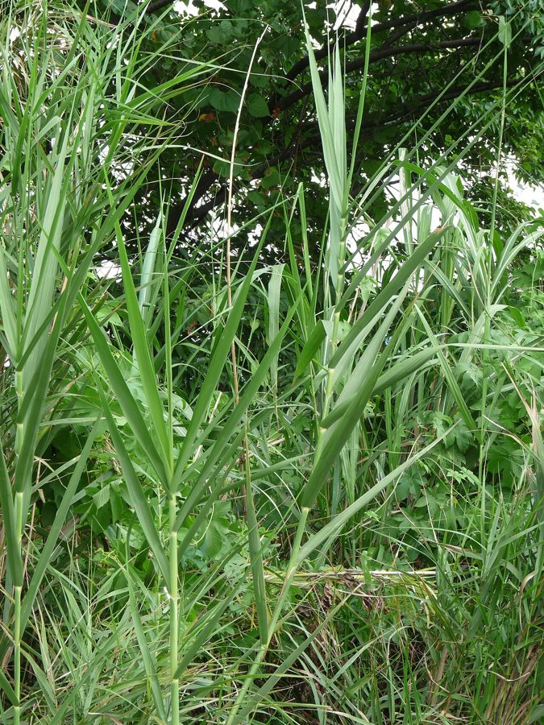

सरकंडाCommon Reed
Phragmites karka · Poaceae · FLR-0088

- Scientific name
- Phragmites karka (Retz.) Trin. ex Steud.
- Family
- Poaceae
- Hindi
- सरकंडा
- Status here
- native
- IUCN
- not evaluated
When to look कब देखें
Present all year.
सरकंडा / Common Reed
Phragmites karka (Retz.) Trin. ex Steud. — Poaceae
सरकंडा (नर्कुल / नरकट / कॉमन रीड) — पूर्वी उत्तर प्रदेश के तालाबों के किनारों, दलदली मैदानों, नदियों के तटबंधों (Ghaghra and Rapti riverbanks) और मौसमी आर्द्रभूमि में उगने वाली एक अत्यंत विशाल, घनी झाड़ीदार और बहुवर्षीय जलीय घास (tall robust perennial aquatic grass) है। इसकी ऊंचाई लगभग 2 से 6 मीटर तक होती है। शरद ऋतु (सितंबर-दिसंबर) में इसके तनों के शिखर पर विशाल, रोएँदार और बैंगनी-भूरे रंग के पुष्पगुच्छ (large feathery purplish-brown panicles) आते हैं। पारिस्थितिक रूप से, सरकंडा जलाशय के जलीय जीवन के लिए एक महत्वपूर्ण आवास-निर्माता (habitat-forming species) है। इसके सघन झुंड पक्षियों जैसे बैंगनी बगुला (Purple Heron, BRD-0055) को घोंसला बनाने का सुरक्षित स्थान, जलमुर्गी (Common Moorhen, BRD-0057) को छिपने का आश्रय, और सर्दियों में आने वाले प्रवासी पक्षियों जैसे गुलाबी मैना (Rosy Starling, BRD-0065) व शिकारियों (Harriers, BRD-0047) को रात में विश्राम करने के लिए सुरक्षित स्थान प्रदान करते हैं। इसके खोखले, बांस जैसे मजबूत तनों का उपयोग छप्पर बनाने, टोकरियां बुनने और पारंपरिक बांसुरी (bansuri) बनाने के लिए किया जाता है।
Quick Identification त्वरित पहचान
| Feature | Description |
|---|---|
| Plant habit | Very tall, robust, colonial perennial grass growing 2–6 meters high, forming dense, impenetrable reed beds |
| Stems (Culms) | Thick (10–25 mm), erect, hollow, bamboo-like, green, and leafy up to the top |
| Leaves | Alternately arranged, flat, broad (30–60 cm long, 2–4 cm wide), tapering to a sharp point, with smooth margins |
| Flowers | Large, plume-like, branched panicles (30–50 cm), turning purplish-brown and covered in soft silky hairs |
| Root system | Long, creeping, woody underground rhizomes that spread horizontally in wet soil to shoot new culms |
Field tip: Look along permanent pond edges or river channels in October. Scan for giant, leafy walls of green reeds that are twice the height of a human, bearing large, feathery purplish plumes that wave in the wind. The stems are hollow, light, and look like thin bamboo.
Morphology आकारिकी
Biometrics (typical measurements of mature plants in the northern Indian plains):
| Measurement | Range |
|---|---|
| Plant height | 2.0–6.0 m |
| Stem diameter | 10–25 mm |
| Leaf blade length | 30–60 cm |
| Leaf blade width | 2.0–4.0 cm |
| Panicle flower length | 30–50 cm |
| Weight of 1000 seeds | 0.1–0.12 g |
Stem and Rhizomes: Stems are erect, smooth, hollow between joints, green, becoming straw-colored when dry, forming massive clonal stands through underground rhizomes.
Foliage: Linear-lanceolate leaves, closely wrapping the stem at the base with a smooth sheath. The leaves are stiff, spreading horizontally or drooping slightly.
Flowers: Spikelets are arranged in dense branched panicles, bearing 3–10 flowers. The base of each flower spikelet has long, silky hairs that aid wind dispersal.
Seeds: Tiny, light brown grains, floating easily on water and wind.
Associated Species / Interactions संबंधित प्रजातियाँ
- Avian Habitat Web:
- Nesting: The dense, water-surrounded reed beds are the primary nesting sites for the Purple Heron (Ardea purpurea), protecting eggs from land predators.
- Shelter: The Common Moorhen (Gallinula chloropus) actively swims and hides inside the reed base.
- Roosting: During winter, migrating flocks of Rosy Starling (Pastor roseus) and Montagu's and Pallid Harriers (not yet in the atlas) (Circus macrourus) use the reed tops as safe communal roosting sites.
- Pollinators: Wind-pollinated, but various small pollen-feeding beetles inhabit the flower heads.
Pests and Diseases कीट और रोग
- Reed Aphid: Hyalopterus pruni clusters on the leaf undersides in winter, sucking sap and secreting sticky honeydew.
- Stem Gall Fly: Larvae bore into young shoots, causing woody swellings (galls) that stunt stem height.
- Ergot Fungus: Claviceps infects developing seeds, turning the grain into a toxic black horn-like structure.
Traditional and Ethnobotanical Use पारंपरिक और नृवंशवनस्पति उपयोग
- Waterproof Roof Thatching: The mature, dry hollow stems are harvested in December, tied in thick bundles, and used to make the base layer of thatched roofs (chhappar) for rural huts.
- Traditional Reed Flutes (Bansuri): The thin, hollow stems are selected, cured, and bored with holes by local musicians to make traditional folk flutes and toys.
- Woven Reed Mats (Chatai): The green stems are split flat, dried, and woven by rural women to make durable sleeping mats and grain-drying screens.
- Soil Bio-Drainage: Planted along swampy canal banks to absorb excess soil moisture through transpiration, preventing waterlogging in adjacent farming plots.
Expected Locally स्थानीय रूप से अपेक्षित
Not a field record. Written from published accounts for eastern Uttar Pradesh. No confirmed local sighting yet — if you have seen it, that is what the atlas needs.
अभी तक स्थानीय पुष्टि नहीं। यह विवरण प्रकाशित स्रोतों से है, किसी अवलोकन से नहीं।
A highly common and ecologically important grass in all low-lying areas of the Basti district, regularly observed in the Harraiya, Vikramjot, and Basti blocks near the banks of the Saryu river. Villagers state that these reed beds (narkul ki jhari) are never cleared entirely because they protect the riverbanks from monsoon erosion and provide the primary material for making thatch roofs and baskets.
Distribution वितरण
Global range: Native to tropical and subtropical zones of Africa, South Asia (India, Pakistan, Bangladesh), Southeast Asia, and northern Australia.
In India: Found throughout all states in moist marshes, swamps, and river beds.
In Uttar Pradesh: Abundant state-wide along all major Gangetic river basins and canal systems.
In Basti district / eastern UP: Widespread across all riverine blocks.
Research Questions शोध प्रश्न
Anyone can investigate these | कोई भी इन प्रश्नों की जाँच कर सकता है
- How many bird species can be observed using a 10-meter patch of Common Reed bed in a morning watch session? — Record bird sightings and activities.
- Does a thatched roof made of Common Reed stems last longer in monsoon rains than one made of Kans Grass? — Interview local home owners.
- What is the daily growth rate of a young Reed shoot after monsoonal water levels rise in July? — Measure and record shoot heights.
- How many days do the feathery seed plumes remain active before dispersing all their seeds in winter? — Monitor seed drop rates.
- Does the population count of Reed Aphids drop when the reed stands are exposed to direct winds compared to shaded forest margins in Basti? / क्या बस्ती के घने जंगलों की तुलना में तेज हवा वाले खुले मैदानों में सरकंडे के पौधों पर एफिड्स (Aphids) का प्रकोप कम होता है? — Compare insect counts in different sites.
Similar Species मिलती-जुलती प्रजातियाँ
| Species | How to tell apart | comparison |
|---|---|---|
| Kans Grass (Saccharum spontaneum) | Has solid stems (not hollow); leaves are much narrower (5-15 mm) with sharp cutting margins; flower plume is bright silver-white | काँस — ठोस तने, बारीक कटने वाली पत्तियां |
| Common Cattail (Typha latifolia) | Stems are solid; leaves are thick and sword-like; flower is a sausage-shaped brown poker | पटेर — मखमली चोकलेट जैसे फल, बिना टहनी के पत्ते |
| Giant Reed (Arundo donax) | Leaves are arranged in a flat, fan-like shape; stems are thicker, woody; flowers are denser and lighter | बड़ा नर्कुल — अधिक ऊँचाई, मोटी छड़ी जैसे तने |
Field rule: Giant perennial aquatic grass (2–6 m) with hollow bamboo-like stems, broad leaves wrapping the stem, and terminal feathery purplish-brown flower plumes waving in autumn marsh margins, is the Common Reed (Sarkanda).
Taxonomy & Classification वर्गीकरण
Original description. Anders Jahan Retzius described this species as Arundo karka in 1789. Trinius and Steudel placed it in the genus Phragmites in 1841 in Steudel's Nomenclator Botanicus (ed. 2, Vol. 2, p. 324). The genus name Phragmites is derived from the Greek phragma, meaning hedge or fence, referencing its dense screen-like growth. The specific name karka comes from the Sanskrit and Hindi name karka (reed).
Subspecies. Monotypic — no subspecies are currently recognised.
Family and order placement. Placed in the order Poales, family Poaceae (grass family), subfamily Arundinoideae, tribe Arundineae.
Phylogenetic notes. Phragmites karka is a member of the cosmopolitan genus of wetland reeds, possessing high physiological tolerance to low-oxygen muds (aerenchyma tissues) and expanding clonally via robust rhizomes.
IUCN status rationale. Not evaluated (NE) by the IUCN Red List. It has a highly secure, stable, and expanding global population in wetland ecosystems.
Photo Gallery फोटो गैलरी
References संदर्भ
- Steudel, E. T. (1841). Nomenclator Botanicus. Second Edition. Stuttgart, Vol. 2, p. 324. [original generic transfer]
- Retzius, A. J. (1789). Observationes Botanicae. Lipsiae, Part 5, p. 20. [original description as Arundo karka]
- Bor, N. L. (1960). The Grasses of Burma, Ceylon, India and Pakistan. Pergamon Press, Oxford.
- Troup, R. S. (1921). The Silviculture of Indian Trees. Oxford University Press.
- World Flora Online (2024). Phragmites karka details.
- GBIF Occurrence Data — Phragmites karka, India (2010–2025).
Source file: species/flora/aquatic/common_reed.md